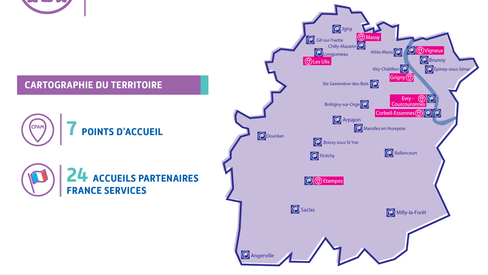
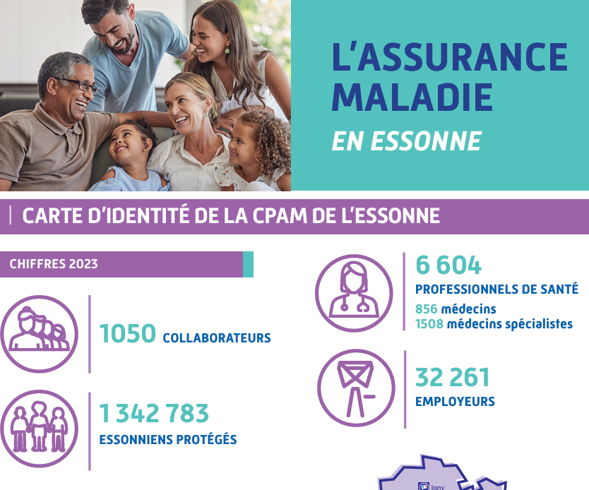
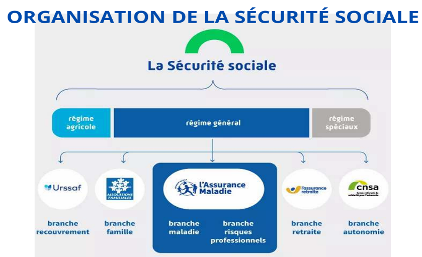

Découvrez mon expérience professionnelle au sein de la CPAM
« La Sécurité sociale, c’est la garantie donnée à chacun qu’en toutes circonstances il disposera des moyens nécessaires pour assurer sa subsistance et celle de sa famille. »
Cette citation d’Ambroise Croizat résume parfaitement l’idée générale de la Sécurité sociale. Créée en 1945 en même temps que l’Assurance Maladie, elle a pour mission de protéger tous les citoyens contre les principaux risques de la vie (maladie, vieillesse, famille, accidents) grâce au principe de solidarité nationale.
L’Assurance Maladie est une branche fondatrice de la Sécurité sociale. Elle a été créée par les ordonnances des 4 et 19 octobre 1945 au lendemain de la Seconde Guerre mondiale. Avant sa création, il n’existait pas de couverture sociale pour l’ensemble de la population. Les inégalités face à la maladie étaient très importantes, les soins représentaient un coût élevé et de nombreuses personnes ne pouvaient pas bénéficier d’un accès aux soins. La mise en place de l’Assurance Maladie a permis de garantir une meilleure protection sociale et un accès plus équitable aux soins grâce au principe de solidarité nationale.

Afin de garantir un service de proximité à l’ensemble des assurés, l’Assurance Maladie s’appuie sur un réseau territorial composé de nombreuses caisses réparties sur le territoire. Cette organisation permet d’accompagner efficacement les usagers dans leurs démarches.

La CPAM de l’Essonne intervient sur l’ensemble du département de l’Essonne et assure la protection de plus d’1,3 million d’assurés.
Elle travaille en lien étroit avec plus de 6 600 professionnels de santé (médecins, infirmiers, pharmaciens, établissements de soins) afin de garantir l’accès et la qualité des soins pour la population.
Son action est assurée par environ 1 200 collaborateurs en 2025, répartis sur plusieurs sites d’accueil et de gestion, qui accompagnent les assurés, les employeurs et les professionnels de santé dans leurs démarches.
Par ses missions de remboursement, de prévention, de versement d’indemnités, d’accompagnement social et de gestion du système de soins, l’Assurance Maladie de l’Essonne constitue un acteur majeur de la santé publique et de la cohésion sociale au niveau départemental.

Le support informatique est découpé en plusieurs équipes qui collaborent ensemble afin d'assurer le bon fonctionnement du système d'information de la CPAM de l’Essonne.
Les administrateurs systèmes et réseaux sont chargés de déployer, gérer et maintenir les infrastructures informatiques et réseaux de l’organisation.
Ils veillent à la disponibilité, aux performances et à la sécurité des systèmes, assurent les sauvegardes, mettent en place les plans de reprise d’activité et appliquent la politique de sécurité du SI.
Ils diagnostiquent les incidents techniques, gèrent les droits d’accès, assurent une veille technologique et collaborent avec les équipes internes et les partenaires externes.
Les développeurs conçoivent, développent et maintiennent des applications internes et nationales pour répondre aux besoins des utilisateurs de l’Assurance Maladie.
Ils développent de nouvelles fonctionnalités, corrigent des anomalies, réalisent des tests et participent à l’amélioration continue des applications.
Ils utilisent principalement PHP (Symfony), JavaScript, SQL et différents outils DevOps afin de produire des applications web performantes et sécurisées.
Les correspondants informatiques accompagnent les professionnels de santé dans l’utilisation des outils numériques et des démarches en ligne.
Ils conseillent sur les logiciels métiers, les téléservices et les services numériques proposés par l’Assurance Maladie.
Ils assurent également la formation des utilisateurs et apportent une assistance technique en cas de difficulté ou d’incident.
En tant que technicien informatique à la CPAM, j’assure l’assistance aux utilisateurs en les accompagnant dans la résolution de leurs incidents matériels et logiciels.
Je participe à la gestion du parc informatique, à la masterisation et au déploiement des postes de travail, ainsi qu’à la configuration des équipements selon les besoins des utilisateurs.
Je réalise des diagnostics à distance, guide les collaborateurs dans la résolution des dysfonctionnements ou prends le contrôle à distance lorsque cela est nécessaire.
J’interviens également sur l’installation et la configuration de serveurs réseau tout en veillant à la sécurité du système d’information et au respect des bonnes pratiques informatiques.
Adresse :
2 Rue Ambroise Croizat
91000 Évry-Courcouronnes
Téléphone :
36 46
Horaires :
Lundi au vendredi
08h30 - 17h00
Site internet :
ameli.fr